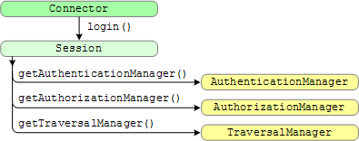
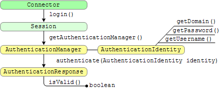
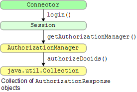
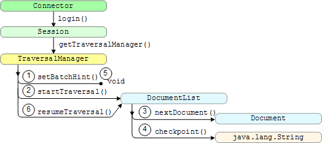
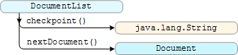
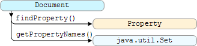
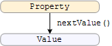
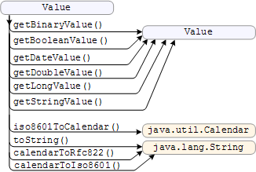
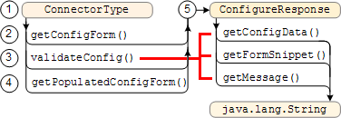
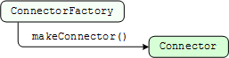

Google Search Appliance software versions 6.2
Connector manager version 2.4.0
Posted December 2009
This section provides an overview of the connector manager Service Provider Interface (SPI). The SPI consists of interfaces, classes, and methods that the connector manager calls in a connector to implement a connector instance, traverse documents, and to authenticate and authorize users. Javadoc for the SPI is provided on the connector manager open source site. For connector terminology definitions, see the Google Enterprise Glossary.
Chapters: About This Guide, Introduction, Getting Started, SPI Overview, Traversing Documents,
Authentication, Authorization, Configuration, Appendix A: Building a Debug Connector Manager
The connector manager SPI consists of interfaces and methods that specify authentication, authorization, traversal of content management system documents, and enable you to supply forms that appear in the Admin Console so that administrators can add or change connector parameters. The connector manager communicates with a connector using the SPI methods. The connector does not communicate directly with the search appliance.
The connector manager SPI provides the following interfaces:
com.google.enterprise.connector.spi package defines the connector framework. You need to provide classes that implement these interfaces. SimpleXXX functions provide simple implementations of the SPI interfaces. In accordance with the Java programming convention, use of these objects is optional. You can implement the required interfaces by using the simple classes directly, by subclassing them, or you may write your own implementations.The Connector interface provides connector-specific functionality that supports a content management system.
Connector sessions run in a stateless condition. Ensure that the connection with a content management system is available each time the connector starts a task. The connector manager keeps calling the connector to get new documents.
The return value of the DocumentList object enables a connector to specify how the connector manager handles traversal. If after reading documents, no more updated documents remain to be traversed, the connector manager waits 5 minutes before resuming a traversal. Alternatively, connectors can specify zero documents in a list to inform the connector manager to set a checkpoint and then resume traversing. Otherwise, the connector manager traverses and processes documents continuously.
Only if the servlet container restarts or an unrecoverable error occurs does the connector manager start a new session. This means that the login method is called once and not again unless the connector manager terminates unexpectedly, thus the connector implementation must maintain its own access with the content management system.
The Connector interface instantiation sequence is as follows:

When the connector manager discovers a connector, the connector manager calls the login method of the connector to create a new instance of a connector by instantiating the Connector interface. The login method starts access to managers for authentication, authorization, and traversal. The base use of the login method returns a Session object that passes data and objects between the connector manager and a connector.
The login method gets a session with sufficient privileges to perform all actions related to the SPI. A connector supplies credentials for the content management system in the TraversalManager interface.
The Session interface provides the following methods:
The Session.getAuthenticationManager method returns the AuthenticationManager class object.
The AuthenticationManager interface functions are shown in the following illustration:

The AuthenticationManager interface provides the authenticate method that returns the AuthenticationResponse class object and which provides an isValid method to determine whether a username and password is valid for controlled-access documents. The AuthenticationManager also provides the AuthenticationIdentity interface, which has methods for getDomain, getPassword, and getUsername. The AuthenticationIdentity provides the parameter to the authenticate method.
The AuthenticationManager interface routes authentication requests from the search appliance to your connector. If your connector supplies documents by URL or your connector is only intended for search appliances that are configured with SSO, then you need not implement this interface.
The Session.getAuthorizationManager method returns the AuthorizationManager class object.
The AuthorizationManager interface functions are shown in the following illustration:

The AuthorizationManager interface provides the authorizeDocids method to authorize multiple documents from a content management system. The authorizeDocids method returns a collection of AuthorizationResponse class objects that indicate which documents a user is authorized to view. The methods of this interface route authorization requests from the search appliance to your connector. If your connector only supplies public (world-readable) documents, then you need not implement this interface.
The Session.getTraversalManager method returns the TraversalManager class object. The traversal manager acquires documents from the content management system. (Traversing means to acquire documents from the content management system.)
The TraversalManager interface functions are shown in the following illustration:

The TraversalManager interface provides the startTraversal and resumeTraversal methods for acquiring documents from a content management system, and the setBatchHint method for specifying the size of the DocumentList class object. The traversal manager issues queries to retrieve documents for a connector that provides a content feed, or to retrieve a URL for a connector that provides a metadata-and-URL feed. The connector manager can use the traversal manager to start a traversal from the beginning of a content management system or resume a previous traversal. A traversal resolves into a document list of traversed documents or URLs and metadata.
The connector manager traversal sequence is as follows:
The connector manager calls the setBatchHint method to inform the connector that the number of documents to traverse need not be higher than the number specified in the setBatchHint method. By checking the setBatchHint method first, the connector knows how many documents to return when the startTraversal or resumeTraversal methods complete.
The connector manager calls the startTraversal method to start acquiring documents from the content management system. The connector manager receives a list of documents from the startTraversal method.
DocumentList.
The connector manager calls the nextDocument method to get another document.. Each Document returned is fed to the search appliance. The connector sets the return value of the DocumentList object to instruct the connector manager what to do next. A null return value indicates that traversal is done, An empty return value indicates to set the checkpoint and keep traversing, and documents in the DocumentList indicates to send the documents to the search appliance.
The connector sets the checkpoint after every batch of documents. The checkpoint helps the connector remember where within the content management system the traversal was paused, so that the connector may resume at that point in the future.
The connector manager calls the setBatchHint method to inform the connector that the number of documents to traverse need not be higher than the number specified in the setBatchHint method.
The connector manager calls the resumeTraversal method, supplying it the previously remembered checkpoint to indicate where to resume acquiring documents from the content management system. The resumeTraversal method returns a DocumentList identifying documents to traverse in this batch. The connector manager moves to Step 3 to process the DocumentList and repeats Steps 3 to 6 indefinitely.
After traversing the most recent documents in a content management system, the startTraversal and resumeTraversal methods return the documents in a DocumentList from which the connector manager can extract documents, properties, and property values. The SimpleDocumentList class is a basic implementation of the DocumentList interface.
The DocumentList interface instantiation sequence is as follows:

The DocumentList interface provides the checkpoint method that indicates the current position within the document list, that is where to start a resumeTraversal method. The nextDocument method gets the next document from the document list that the connector acquires from the content management system.
For more information, see Iterating Over a Document List.
The Document interface gets the properties from a document. This interface enables the connector manager to extract property values and names from a document. Properties provide information about the document, such a document ID, MIME type, and last-modified date that the connector manager uses to process documents.
The Document interface instantiation sequence is as follows:

The Document interface gets the properties from the document list. For more information, see Metadata Properties. The findProperty method returns Property class objects. The findProperty method returns the property that it is asked to get from the connector. The getPropertyNames method returns a list of all properties that the connector makes available.
The findProperty method may be called in situations where the property would not be returned from the getPropertyNames method. The connector manager may ask a connector for a property that the connector does not supply. When this occurs, the connector must not throw an exception. The connector can return null for the findProperty method.
The SimpleDocument class is a basic implementation of the Document interface.
A property provides information about a document, such as its document ID, MIME type, and last-modified date. For more information, see Metadata Properties.
The Property interface instantiation sequence is as follows:

The Property interface gets each property value.
The SimpleProperty class is a basic implementation of the Property interface.
The Value objects are used to provide property values from the connector to the connector manager as returned from calls to the Property.nextValue method.
The Value class provides factory methods for constructing Value objects for various data types.
A connector cannot implement its own Value class or even subclass the one provided (unlike most of the other interfaces, for which a connector must provide an implementation).
The methods in the Value class are as follows:

The Value class provides conversion methods for numeric and string values. For more information on the Calendar object formats, see RFC 822 and Date and Time Formats, which describes ISO 8601.
The ConnectorType interface provides methods that configure a connector instance. The SimpleConnectorType class is a basic implementation of the ConnectorType interface.
The ConnectorType interface instantiation sequence is as follows:

ConnectorType object using the parameters in the connectorType.xml file. getConfigForm method to provide an XHTML configuration form in which an administrator can specify connector parameter values in the Admin Console. validateConfig method to verify the form information. The validateConfig method can also call the ConnectorFactory class to instantiate a connector and verify that the connector instance can communicate with the content management system. If validation fails, the validateConfig method adds a message to the configuration form for the administrator to correct the form information. The getConfigData, getFormSnippet, and getMessage methods only work with validateConfig as indicated by the red line in the illustration.getPopulatedConfigForm method to retrieve stored information and create an XHTML form with the information. ConfigureResponse object that can contain a configuration form and an optional message to display on the Admin Console if corrections are needed.The ConnectorType interface provides methods that the connector manager calls to supply rows in an XHTML table as a form to the Admin Console so that an administrator can specify or change parameter values for a connector. For more information and an example of configuration form XHTML table rows, see Creating a Configuration Form.
For information on how a search appliance, connector manager, and a connector handle the tasks associated with each ConnectorType method, see Following Connector Type and Implementation Processes.
The ConnectorFactory interface enables the ConnectorType.validateConfig method to instantiate a temporary connector instance to ensure that the content management system responds to the host and port provided in the configuration form. If this test fails, the validateConfig method can send the configuration form back to the Admin Console to get the correct access information for the content management system.
The ConnectorFactory interface also gives a connector access to the values in the connectorInstance.xml after the connector is instantiated. Access to this XML file enables a connector to view the properties in the file and potentially modify information to pass in the ConfigureResponse object that the validateConfig method returns.
The ConnectorFactory interface instantiation sequence is as follows:

The makeConnector method returns a Connector object, which exists only while the ConnectorType.validateConfig method runs.